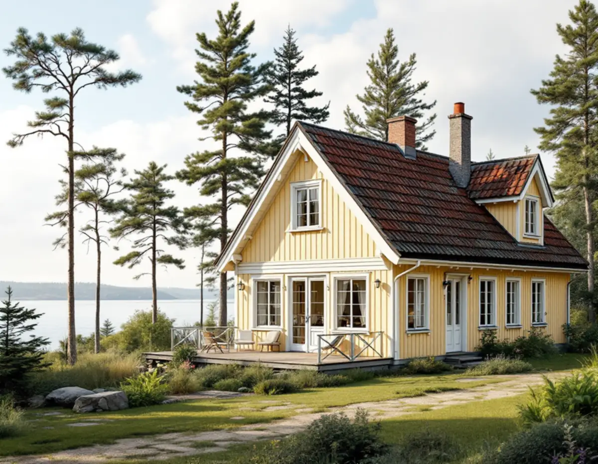
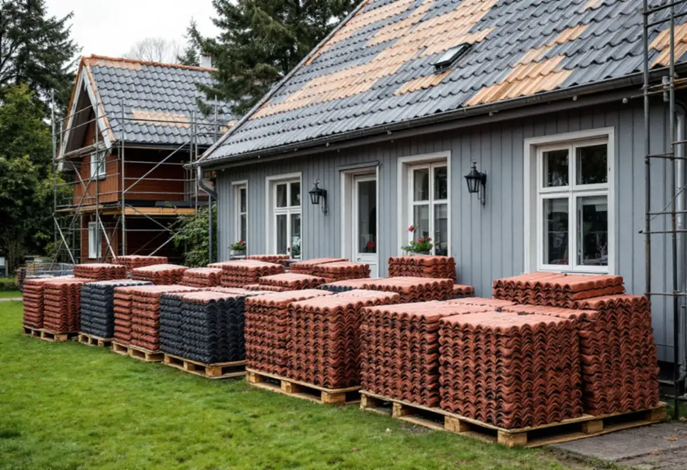
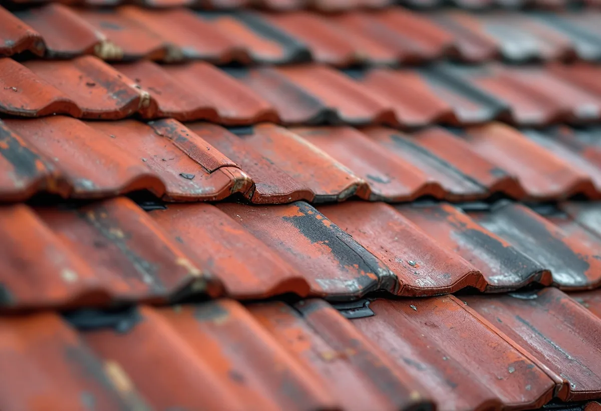

Platsbesök
Vi bedömer tak, underlag och vind och räknar hur stor del av teglet som är helt.
Innan taket byts på ett äldre hus i Österåker lönar det sig att ta reda på om huset räknas som särskilt värdefullt. Då kan även underhåll kräva bygglov. Geal Entreprenad AB byter tak i hela Österåker och går igenom husets värden och materialvalet innan något rivs.

Österåkers kommun har en lista med frågor för den som undrar om huset har kulturvärden. Finns det en detaljplan med skyddsbestämmelser för huset? Ligger det i eller nära ett kulturmiljöområde i Österåkerskartan? Finns det med i en inventering eller ett kulturmiljöprogram? Har det en bevarad och tidstypisk karaktär, med ursprunglig form och volym eller bevarade byggnadsdetaljer? Är huset byggt före 1920? Svarar du ja på någon av frågorna kan huset vara värdefullt.
I en detaljplan betyder ett litet k att byggnaden ska behandlas varsamt, och ett litet q att den inte får rivas. Kommunen påpekar att även enkla, vardagliga byggnader och yngre bebyggelse kan ha kulturvärden. Har du kunskap om när huset byggdes blir det lättare att göra varsamma val vid renoveringen. Varsamhetskravet gäller enligt kommunen alla byggnader och alla ändringar, oberoende av husets ålder och oavsett om åtgärden kräver lov eller anmälan. Varsamheten kan till exempel gälla färgsättning, proportioner och detaljer.

Ligger fastigheten i ett kulturhistoriskt särskilt värdefullt område, eller är byggnaden själv särskilt värdefull, behöver du enligt kommunen söka bygglov för bland annat fasadändring, underhåll och solpaneler. Från den 1 december 2025 skärptes reglerna om förvanskningsförbudet, och i sådana miljöer införs eller behålls en utökad lovplikt. Kommunen ber dig kontakta bygglovsenheten innan arbetet påbörjas.
Till bygglovsansökan kan det behövas en antikvarisk förundersökning som beskriver byggnadens kulturvärden och hur de påverkas, och ibland en konsekvensbeskrivning. För mindre åtgärder kan ett enklare antikvariskt utlåtande räcka. Även när lov inte krävs går det att söka frivilligt bygglov, vilket kommunen skriver kan vara en fördel om du planerar att sälja huset.
Kommunens Råd och vägledning för byggande i Svinninge kallar taket husets femte fasad. Där står att taktegel användes på alla byggnader från slutet av 1800-talet och framåt, att nya material kom in på marknaden från 1950-talet och att äkta lertegel är ett naturmaterial som kan andas, så att fukt kan ventileras ut. Vägledningen råder att inte ersätta lertegel med betongpannor, eftersom de är tjockare och tyngre och kulören bleks med åren.
Vägledningen påpekar också att ett tegeltak som inte håller tätt oftast läcker för att underlagspappen har spruckit eller för att läkten under är gammal och skadad. Det är just underlag och läkt som byts vid ett takbyte. Vägledningen råder också att se över taket innan vintern och rätta till lossnade pannor eller byta spruckna. För nya byggnader nämns nytt lertegel, slätplåt eller papp, och sedumtak som ett alternativ. Om sommarvillornas tak i kommunen kan du läsa under takrenovering i Österåker.
Enligt vägledningen finns det ingen anledning att byta ut allt taktegel för att ett par pannor är trasiga. Komplettera i stället med begagnade eller nya pannor. Hus i grannskapet kan ofta vara belagda med tegel från samma bruk, så det kan vara värt att fråga grannarna eller annonsera efter tegel.
Vid ett sådant takbyte tas pannorna ner och sorteras, och hela pannor ställs undan. Underlagspapp, läkt och plåt byts, och skadad råspont ersätts. Därefter läggs teglet tillbaka, och de pannor som saknas ersätts med begagnat eller nytt tegel som passar. Är det gamla teglet för skadat lägger vi nytt tegel, och kulören stäms av mot huset. Våra övriga tjänster i kommunen finns under takläggare i Österåker, och om bytet i stort under takbyte.

Vi bedömer tak, underlag och vind och räknar hur stor del av teglet som är helt.
Detaljplan och Österåkerskartan kontrolleras innan materialet väljs.
Rivning, sortering, underlag, tegel och plåt står var för sig.
Pannorna tas ner och sorteras, hela pannor ställs undan.
Råspont lagas och ny underlagspapp, läkt och plåt läggs.
Hela pannor läggs tillbaka och kompletteras, och vi går igenom taket med dig.
Skatteverket räknar det som rotarbete att byta och reparera takpannor och hängrännor på ett småhus, och även att montera och montera ner byggnadsställningen och att byggstäda efter arbetet. Du ska äga huset när arbetet utförs och helt eller delvis bo i det, och det gäller även fritidshus.
Avdraget är högst 30 procent av arbetskostnaden, högst 50 000 kr per person och år och högst 75 000 kr tillsammans med rutavdrag. Material, resor och bortforsling ger inget avdrag. Geal drar avdraget direkt på fakturan.
Takets yta och form, hur stor del av teglet som kan läggas tillbaka, hur mycket råspont som behöver bytas, plåtarbetena kring kupor och skorsten och om ett antikvariskt underlag behövs. Läs mer i vad kostar ett takbyte. Efter ett gratis platsbesök får du ett skriftligt kostnadsförslag.
Byte av tegel-, betong- och plåttak.
Takbyte →Takbyte, takbesiktning och plåtarbeten.
Takläggare i Österåker →Svinninge, sommarvillor och sportstugor.
Takrenovering i Österåker →Uthyrning, kulturmiljö och fornlämningar.
Attefallshus i Österåker →VA-utbyggnad, öar och vattensmarta val.
Badrumsrenovering i Österåker →Rivning, markarbete och gatukostnader.
Byggföretag i Österåker →Skärgårdshus, fritidshus och villor i Österåker.
Fasadrenovering i Österåker →Varsamhet, kulturvärden och kustlägen i Österåker.
Fönsterbyte i Österåker →Sommarvillorna i Svinninge.
Fönsterrenovering i Österåker →Jämna golv och färre trösklar.
Golvläggare i Österåker →Helårshus, brunn och avlopp.
Köksrenovering i Österåker →Sommarvillor, röda stugor och efterkrigsvillor.
Målare i Österåker →Bryggor, altaner och äldre snickerier.
Snickare i Österåker →Sommarvillan blir åretruntbostad.
Tapetsering i Österåker →Grannmedgivande, strandskydd och utstakning.
Tillbyggnad i Österåker →Fritidshuset, värmen och anmälan.
Totalrenovering i Österåker →